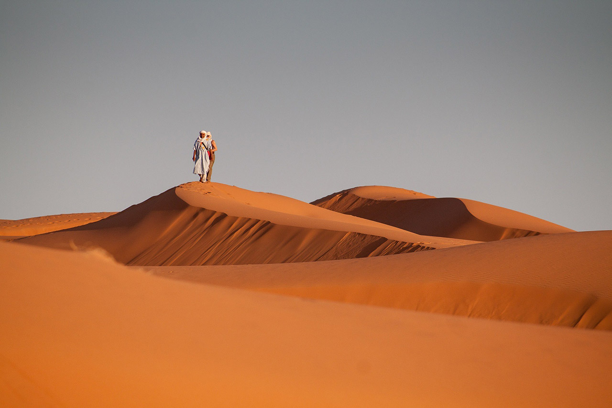
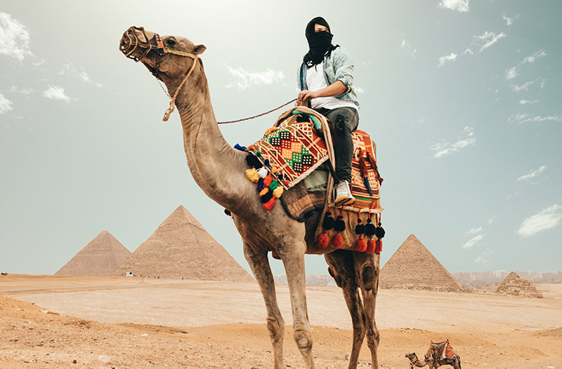
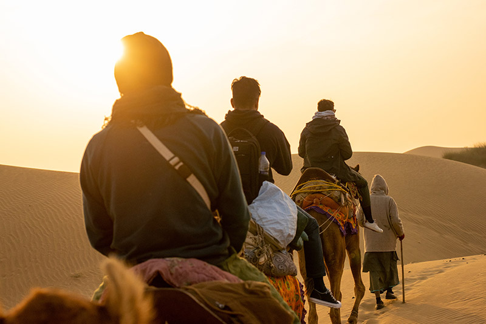
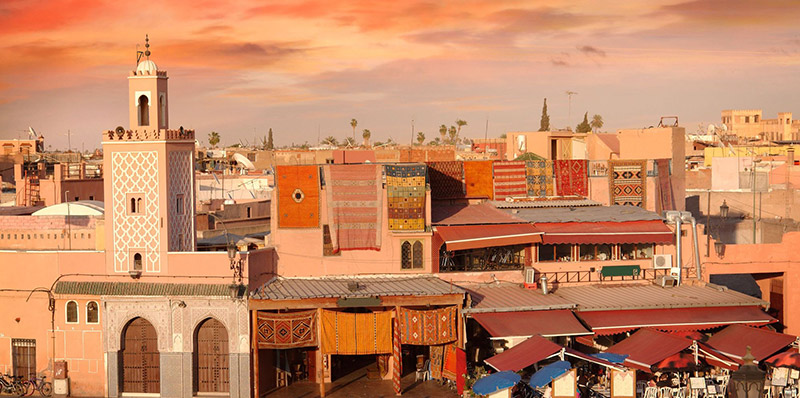
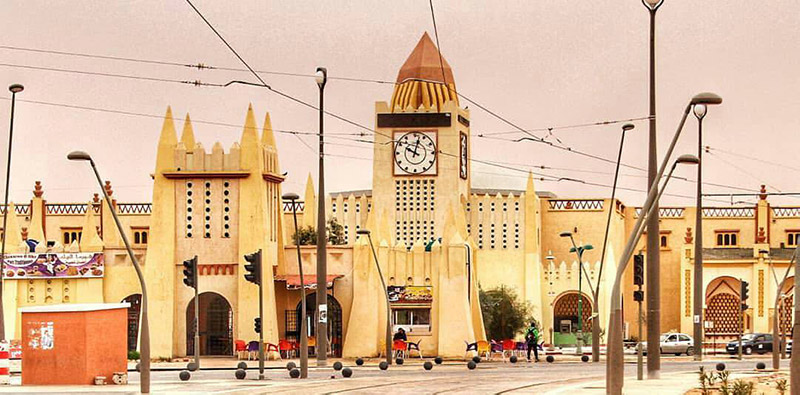
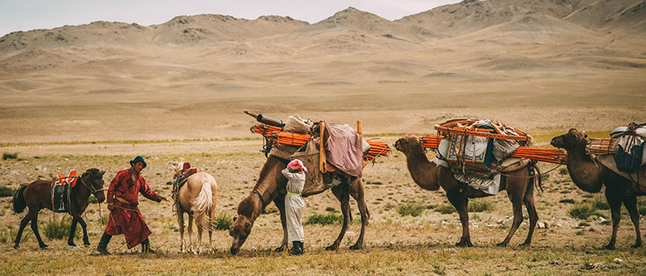
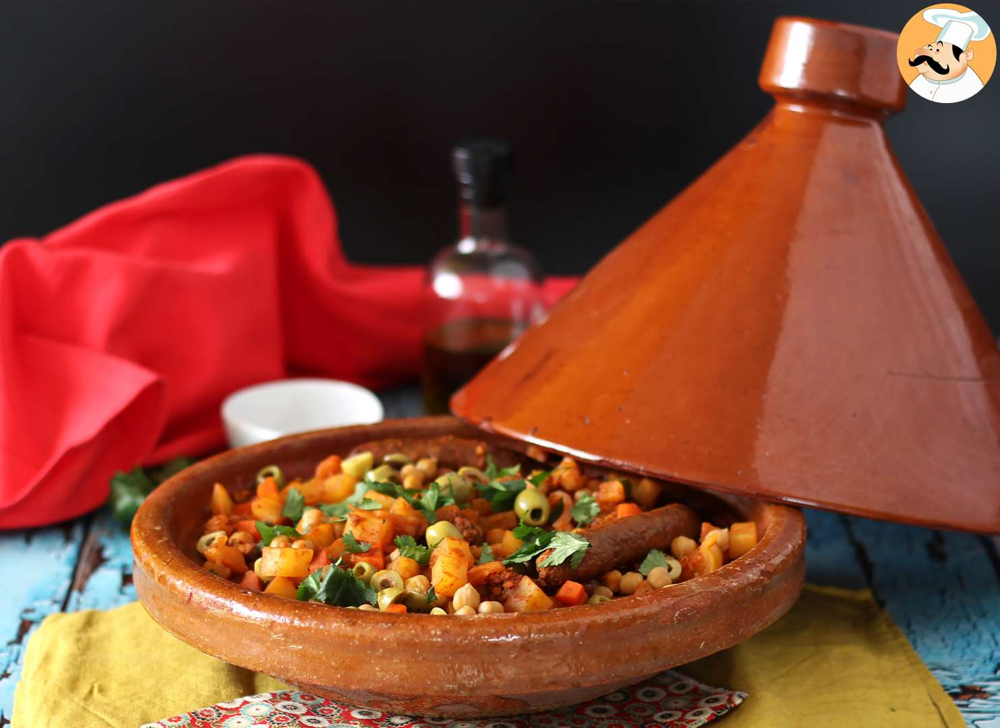

O Deserto do Saara
É o deserto quente mais extenso do mundo, localizado no norte da África. Ele oferece uma grande variedade de actividades e serviços turísticos.
Actividades e serviços
Passeio de camelo
- 
- 
Venha desfrutar de uma aventura pelo deserto, enquanto admira as paisagens espectaculares e testemunha o nascer e o pôr-do-sol.
Acampamento em tendas berberes
Desfrute de uma experiência autêntica em tendas tradicionais berberes que possuem acomodações confortáveis, refeições tradicionais, apresentações musicais e oportunidade de observar o céu estrelado do deserto.
Oásis
Venha conhecer os vários oásis do deserto, que são verdadeiros refúgios e oferecem uma atmosfera mais verde, com palmeiras, vegetação exuberante e fontes de água doce.
Dunas de areia
Venha ver de perto as imensas dunas de areia do deserto, que proporcionam paisagens de tirar o fôlego, você poderá caminhar pelas dunas, praticar sandboard (surfe na areia) ou simplesmente apreciar a beleza do local.
Cidades históricas
Venha conhecer as cidades históricas do deserto.
-
Marrakech
Localizada no Marrocos, é uma cidade vibrante e colorida, conhecida por sua medina histórica, seus mercados movimentados e seus palácios encantadores.
-
Ouargla
Localizada na Argélia, é uma cidade fascinante, com uma arquitectura tradicional e fortalezas (casbahs).
Cultura e população
A cultura e a população do Deserto do Saara são diversificadas e enriquecedoras.
Povos nômades
O Saara abriga várias populações nômades que têm uma profunda conexão com o deserto. Os principais povos são Beabish, Maure, Nefua, Bedúinos, Tuargues e Dierma.
Culinária
A culinária do deserto do Saara é influenciada pelas tradições e recursos disponíveis na região, que é conhecida por seu clima árido e escasso em alimentos frescos. Os pratos típicos reflectem a adaptabilidade das comunidades que vivem nessas áreas remotas. Alguns dos pratos mais conhecidos são:
-
Harira
-
Tajine

Música e dança
A música e a dança são elementos importantes da cultura do Saara. Os ritmos e melodias tradicionais refletem a vida no deserto, contando histórias de amor, heroísmo e vida nômade. Os tambores, instrumentos de cordas e flautas são comumente usados nas apresentações musicais, acompanhados de danças tradicionais que celebram a alegria e a comunidade.